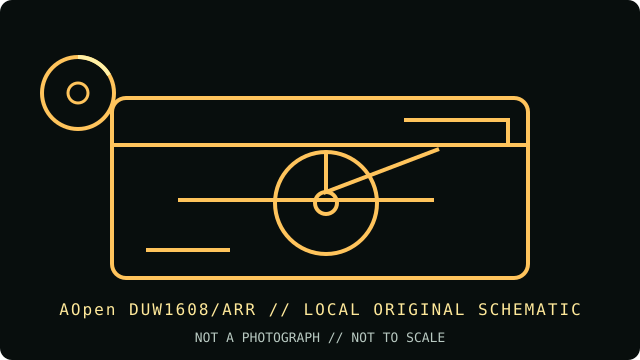

[ INDIVIDUAL COMPONENT // OPTICAL DRIVES ]
AOpen DUW1608/ARR
AOpen DUW1608/ARR is a PATA writer with asymmetric +R and -R capabilities. Its DVD+R DL support is 2.4×; do not substitute rates from competing 16× drives.

IDENTIFICATION: AOpen DUW1608/ARR · Internal 16× DVD+R / 8× DVD-R dual-layer writer. Match the full model and revision marking to the cited archive before applying variant-specific specifications.
Model-specific specifications
| Catalog subcategory | DVD writers |
|---|---|
| Exact product identifier | AOpen DUW1608/ARR |
| Generation / product type | Internal 16× DVD+R / 8× DVD-R dual-layer writer |
| DVD/CD media support | Writes DVD+R, DVD-R, DVD+RW, DVD-RW, DVD+R DL, CD-R and CD-RW. Reads DVD-ROM, DVD±R/RW, supported DVD+R DL and common CD formats. DVD-RAM recording is not supported. |
| Maximum read/write speeds | Write: DVD+R up to 16×; DVD-R up to 8×; DVD+R DL up to 2.4×; DVD±RW up to 4×; CD-R up to 48×; CD-RW up to 32×. Read: DVD-ROM up to 16×; CD-ROM up to 48×. |
| Interface and mechanics | Internal 5.25-inch E-IDE/ATAPI (PATA); UDMA Mode 4, DMA Mode 2 and PIO Mode 4 host modes; 2 MB buffer. |
| Host compatibility | Requires a PATA/ATAPI PC with a 5.25-inch bay, suitable power and a compatible recording application. Legacy PC OS and firmware/media requirements should be checked against the DUW1608/ARR download/manual files before installation. |
| Variant and use notes | The model code includes /ARR and must not be shortened to unrelated DUW1608 variants. Use the correct DVD+R versus DVD-R speed profile and validate a burn with readback. |
Compatibility and preservation
Advertised maximum rates are media- and firmware-dependent; they are not a guarantee for aged, damaged or unsupported discs. For archival work, retain the full drive model, firmware, media identifier, write strategy and software version with the image or master.
- Confirm the complete label and PATA jumper position before installing; do not infer capabilities from a related suffix or OEM rebrand.
- Use supported blank media and a compatible recorder application, then verify the completed disc by readback and checksum.
- Handle optical media by its edge or hub, store it in a cool, dry location, and preserve an unmodified original when possible.
Manufacturer and archive sources
- AOpen DUW1608/ARR final specifications — CDRInfo archiveModel-specific supported media, asymmetric write speeds and interface.
- AOpen DUW1608/ARR manuals/firmware — manufacturer-file archiveArchived original manual, firmware and model downloads.
These references document the named model/family; they do not certify a particular used drive, firmware revision or blank-media batch. Confirm exact suffix and region/OEM variant on the hardware label.